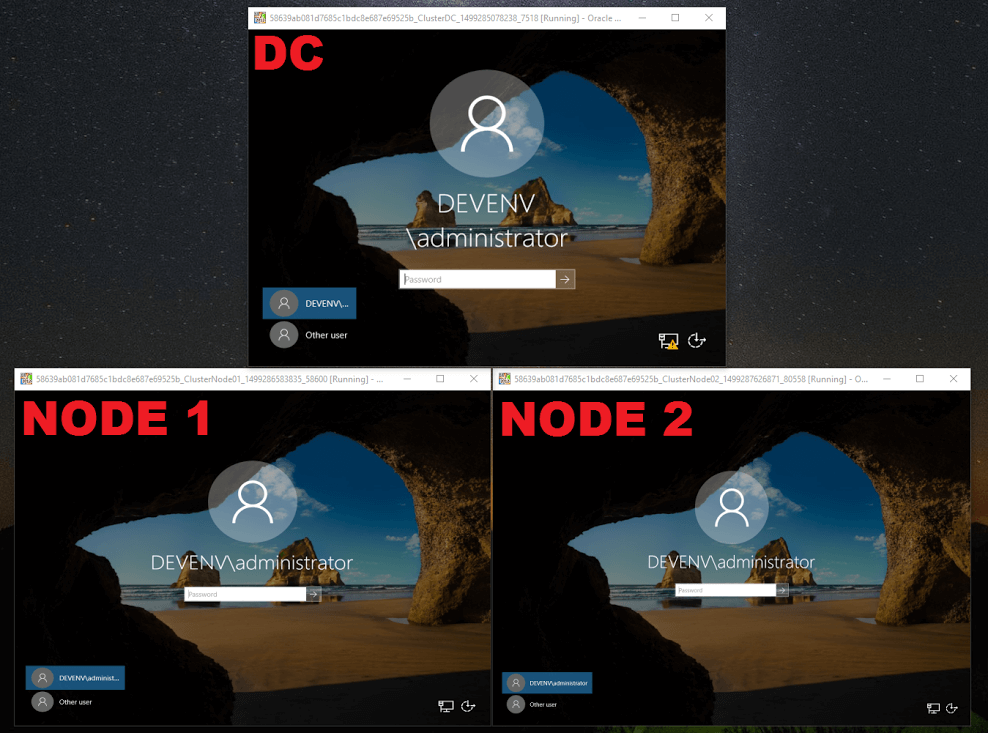

For those that want a Windows cluster environment, but don’t want to spend half the day installing requirements; Vagrant makes this possible with a single command.
The Vagrantfile below will create a domain controller VM and two cluster node VMs based on the YAML file parameters.
Additional nodes can be added, but this should be done before running vagrant up for the first time.
Be warned that running this environment on a single disk requires considerable throughput and I do not recommend running on your primary system disk if it’s not an SSD. Also, security configuration is set for test use only. NOT FOR PRODUCTION USE!
Basic usage:
- Install Virtualbox
- Install Vagrant (>= 1.9.4)
- Copy Vagrantfile & user_params.yml to the same location
- Update the YAML file as needed
- Run
vagrant uporvagrant up ClusterDC ClusterNode01 ClusterNode02 - The “Create cluster” provision runs on the last node VM
The domain controller houses the file share witness and all VMs are joined to the specified domain.

user_params.yml - Update as necessary
:box: jacqinthebox/windowsserver2016
:timezone: Eastern Standard Time
:boot_timeout: 3000
:virtualbox:
:controller: IDE Controller
:host_cache: 'off'
:dc01:
:name: ClusterDC
:public_ip: 192.168.0.210
:nodes:
:node1:
:name: ClusterNode01
:public_ip: 192.168.0.211
:private_ip: 192.168.2.11
:node2:
:name: ClusterNode02
:public_ip: 192.168.0.212
:private_ip: 192.168.2.12
:domain:
:name: devenv.local
:netbios_name: DEVENV
:pass: D3vp@ss
:cluster:
:name: DevCluster
:ip: 192.168.0.200
:default_router: 192.168.0.1Vagrantfile
# -*- mode: ruby -*-
# vi: set ft=ruby :
require 'yaml'
Vagrant.require_version ">= 1.9.4"
user_params = YAML.load_file('user_params.yml')
cluster_nodes = user_params[:nodes].map { |key, value| value[:name] }.join(',')
reverse_lookup_ip = user_params[:dc01][:public_ip].sub(/(.*)\b#{user_params[:dc01][:public_ip].split('.')[3]}\b/i, '\10')
required_plugins = %w(vagrant-reload)
plugins_to_install = required_plugins.select { |plugin| not Vagrant.has_plugin? plugin }
if not plugins_to_install.empty?
puts "Installing plugins: #{plugins_to_install.join(' ')}"
if system "vagrant plugin install #{plugins_to_install.join(' ')}"
exec "vagrant #{ARGV.join(' ')}"
else
abort "Installation of one or more plugins has failed. Aborting."
end
end
Vagrant.configure("2") do |config|
config.vm.define user_params[:dc01][:name] do |dc|
dc.vm.box = user_params[:box]
dc.vm.hostname = user_params[:dc01][:name]
dc.vm.boot_timeout = user_params[:boot_timeout]
dc.winrm.transport = :plaintext
dc.winrm.basic_auth_only = true
dc.vm.network "public_network", ip: user_params[:dc01][:public_ip], auto_config: false
dc.vm.provider :virtualbox do |v|
v.linked_clone = true
v.customize ["storagectl", :id, "--name", user_params[:virtualbox][:controller],
"--hostiocache", user_params[:virtualbox][:host_cache]]
end
dc.vm.provision "Renew OS License", type: "shell",
inline: "Start-Sleep -s 120; slmgr.vbs /rearm"
dc.vm.provision "Configure public network", type: "shell",
inline: "netsh interface ipv4 set address 'Ethernet 2' static #{user_params[:dc01][:public_ip]} \
255.255.255.0 #{user_params[:default_router]}",
privileged: false
dc.vm.provision "Disable firewall|Set time", type: "shell",
inline: "Set-NetFirewallProfile \
-Profile Domain,Public,Private \
-Enabled False; \
Set-TimeZone \"#{user_params[:timezone]}\""
dc.vm.provision "Install AD", type: "shell",
inline: "Install-windowsfeature \
-name AD-Domain-Services \
-IncludeManagementTools \
-Source 'C:\\Windows\\WinSxS'",
privileged: false
dc.vm.provision "Install domain", type: "shell",
inline: "Install-ADDSForest \
-CreateDnsDelegation:$false \
-DatabasePath 'C:\\Windows\\NTDS' \
-DomainName '#{user_params[:domain][:name]}' \
-DomainNetbiosName '#{user_params[:domain][:netbios_name]}' \
-safemodeadministratorpassword (convertto-securestring '#{user_params[:domain][:pass]}' -asplaintext -force) \
-InstallDns:$true \
-LogPath 'C:\\Windows\\NTDS' \
-NoRebootOnCompletion:$true \
-SysvolPath 'C:\\Windows\\SYSVOL' \
-Force:$true"
dc.vm.provision :reload
dc.vm.provision "Create file share witness", type: "shell",
inline: "New-Item \"C:\\FileShareWitness\" \
-type directory; \
New-SMBShare \
-Name \"FileShareWitness\" \
-Path \"C:\\FileShareWitness\" \
-FullAccess #{user_params[:domain][:name]}\\administrator, #{user_params[:domain][:name]}\\vagrant"
dc.vm.provision "Add reverse lookup zone", type: "shell",
inline: "Start-Sleep -s 600; \
Add-DnsServerPrimaryZone \
-NetworkId '#{reverse_lookup_ip}' \
-ReplicationScope Domain"
end
(1..user_params[:nodes].count).each do |i|
node_id = eval("user_params[:nodes][:node#{i}]")
config.vm.define node_id[:name] do |node|
node.vm.box = user_params[:box]
node.vm.hostname = node_id[:name]
node.vm.boot_timeout = user_params[:boot_timeout]
node.winrm.timeout = user_params[:boot_timeout]
node.winrm.transport = :plaintext
node.winrm.basic_auth_only = true
node.winrm.retry_delay = 30
node.winrm.ssl_peer_verification = false
node.vm.provider :virtualbox do |v|
v.linked_clone = true
v.customize ["storagectl", :id, "--name", user_params[:virtualbox][:controller],
"--hostiocache", user_params[:virtualbox][:host_cache]]
end
node.vm.network "public_network", ip: node_id[:public_ip], auto_config: false
node.vm.network "private_network", ip: node_id[:private_ip]
node.vm.network "forwarded_port", guest: 1433, host: 1433, protocol: "tcp", auto_correct: true
node.vm.provision "Renew OS License", type: "shell",
inline: "Start-Sleep -s 120; slmgr.vbs /rearm"
node.vm.provision "Configure public network", type: "shell",
inline: "netsh interface ipv4 set address 'Ethernet 2' static #{node_id[:public_ip]} \
255.255.255.0 #{user_params[:default_router]}",
privileged: false
node.vm.provision "Set DNS", type: "shell",
inline: "netsh interface ipv4 set dns 'Ethernet 2' static #{user_params[:dc01][:public_ip]}",
privileged: false
node.vm.provision "Install Failover Cluster", type: "shell",
inline: "Install-WindowsFeature \
-Name Failover-Clustering \
-IncludeManagementTools \
-Source 'C:\\Windows\\WinSxS'",
privileged: false
node.vm.provision "Install NET 3_5", type: "shell",
inline: "Install-WindowsFeature Net-Framework-Core \
-Source 'C:\\Windows\\WinSxS'",
privileged: false
node.vm.provision "Disable firewall|Set time", type: "shell",
inline: "Set-NetFirewallProfile \
-Profile Domain,Public,Private \
-Enabled False; \
Set-TimeZone \"#{user_params[:timezone]}\""
node.vm.provision "Join domain", type: "shell",
inline: "netdom join #{node_id[:name]} /domain:#{user_params[:domain][:name]}"
node.vm.provision :reload
if i.equal?((1..user_params[:nodes].count).last)
node.vm.provision "Create cluster", type: "shell",
inline: "New-Cluster \
-Name #{user_params[:cluster][:name]} \
-NoStorage \
-Node #{cluster_nodes} \
-StaticAddress #{user_params[:cluster][:ip]} \
-IgnoreNetwork 10.0.2.0/24; \
Set-ClusterQuorum \
-NodeAndFileShareMajority \\\\CLUSTERDC\\FileShareWitness"
end
end
end
endGeneral Tips:
- Set
:host_cache: 'on'within theuser_params.ymlconfiguration file if you experience poor VM performance. This may lead to considerably high host drive activity and host cache consumption. Not recommended, as high host activity can lead to even worse VM performance. - If the Windows license has expired, login as the non-domain vagrant user and run
extend-trial.cmdon the desktop. - You can access each complete node using logins
<domain name>\administratoror<domain name>\vagrant.
MSSQL Server Failover Cluster Tips:
- Enable “AlwaysOn” for each SQL instance within configuration manager
- Run SQL Server instances under static port
1433 - Run SQL Server instances under a domain user
- Run listener under a static port. For example:
192.168.0.209 - If primary instance fails, force failover with:
ALTER AVAILABILITY GROUP <AG Name> FORCE_FAILOVER_ALLOW_DATA_LOSS;. After primary (now secondary) instance is online after a forced failover, re-synchronize database with:ALTER DATABASE <Database Name> SET HADR RESUME;
Errors:
-
- The security database on this server does not have a computer account for this workstation
-
May occur when logging into node server if domain controller server is built/rebuilt afterwards
-
Login with local account and remove server from domain:
netdom remove <server_name> /force -
Rejoin server to domain:
netdom join <server_name> /domain:<domain_name>
-
- Timed out while waiting for the machine to boot.
-
Connection lost to VM
- Force close VM and run
vagrant up <VM name>orvagrant up <VM name> --provisionif the initial setup did not complete
-
- Install-WindowsFeature : The FeatureType code is out of range
-
Potential corrupt cache registry key
- Force close VM and run
vagrant up <VM name>orvagrant up <VM name> --provisionif the initial setup did not complete
-
- The guest machine entered an invalid state while waiting for it to boot.
-
Known to occur after the “Join domain” provision and restart
- Run
vagrant up <VM name> --provisionor if you know the specific missing provisionvagrant up <VM name> --provision-with "<provision name>"